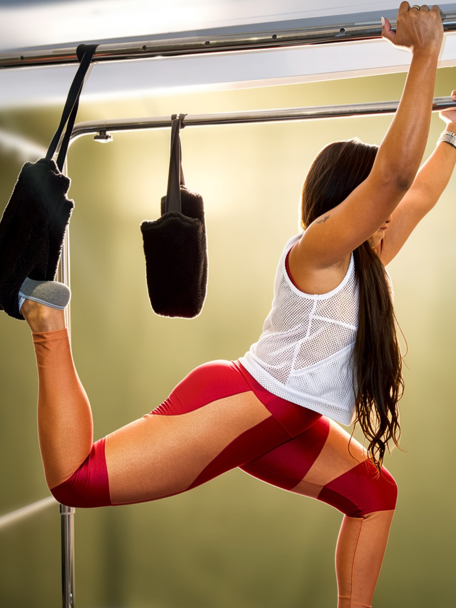
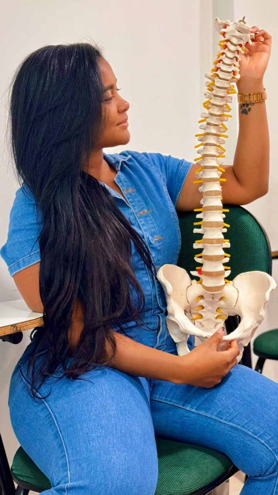

🦴
Coluna Vertebral
Acompanhamento fisioterapêutico para dores, limitações e prevenção relacionadas à coluna.
FISIOTERAPIA • COLUNA • ORTOPEDIA
Atendimento em fisioterapia com olhar individualizado para recuperação, mobilidade, prevenção e qualidade de vida.

Mais do que tratar uma dor, o objetivo é compreender cada pessoa e acompanhar sua evolução de forma individualizada.

SOBRE A PROFISSIONAL
Fisioterapeuta dedicada ao cuidado, à reabilitação e à recuperação do movimento.
Com formação e atuação em Coluna Vertebral e Ortopedia e Traumatologia, o atendimento é pensado para as necessidades de cada paciente.
COMO POSSO AJUDAR
Áreas de cuidado para diferentes necessidades de movimento, recuperação e reabilitação.
Acompanhamento fisioterapêutico para dores, limitações e prevenção relacionadas à coluna.
Fisioterapia voltada à recuperação funcional e ao retorno gradual às atividades.
Suporte na reabilitação após lesões e traumas musculoesqueléticos.
Exercícios e estratégias de recuperação respeitando a evolução de cada pessoa.
NA PRÁTICA
As imagens do próprio projeto mostram diferentes momentos, materiais e contextos relacionados ao trabalho.



EDUCAÇÃO E SAÚDE
Informação simples para ajudar você a entender melhor seu corpo e seus movimentos.

Conheça informações e orientações compartilhadas pela Dra. Kaliane.
Cada corpo tem seu tempo. O acompanhamento adequado ajuda a construir uma evolução segura.
Informação e cuidado para uma rotina com mais consciência corporal.
COMECE SEU CUIDADO
Entre em contato para saber mais sobre avaliação e atendimento.
FALE COMIGO
Para informações sobre atendimento, horários e localização, entre em contato pelo WhatsApp.